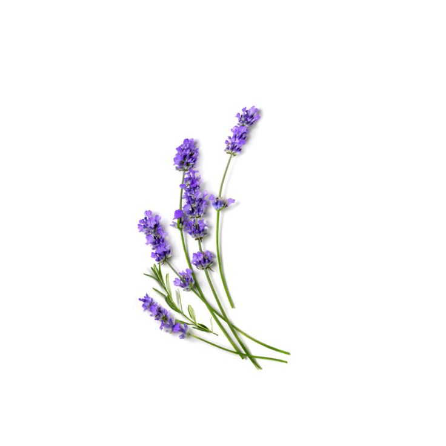

HOKKAIDO
北海道
SUBARCTIC CLIMATE / 亜寒帯
JAPAN'S NORTHERNMOST ISLAND HAS UNIQUE VOLCANIC SOILS FORMED BY ANCIENT ERUPTIONS. THE COOLER CLIMATE AND VOLCANIC EARTH CREATE IDEAL CONDITIONS FOR HARDY PLANTS AND COLD-RESISTANT SPECIES.

JAPAN'S NORTHERNMOST ISLAND HAS UNIQUE VOLCANIC SOILS FORMED BY ANCIENT ERUPTIONS. THE COOLER CLIMATE AND VOLCANIC EARTH CREATE IDEAL CONDITIONS FOR HARDY PLANTS AND COLD-RESISTANT SPECIES.

INTRODUCED TO HOKKAIDO IN THE 1970S, LAVENDER HAS BECOME ICONIC TO THE REGION. THE WELL-DRAINED VOLCANIC SOILS AND COOL CLIMATE CREATE CONDITIONS SIMILAR TO ITS MEDITERRANEAN HOMELAND.

HOKKAIDO'S SUNFLOWERS THRIVE IN RICH, WELL-DRAINED VOLCANIC ASH SOIL. THIS UNIQUE BLACK EARTH ALLOWS THEIR ROOTS TO GROW DEEP AND STRONG. THE CONTRAST BETWEEN THE DARK SOIL AND GOLDEN PETALS CREATES A STUNNING SUMMER LANDSCAPE.